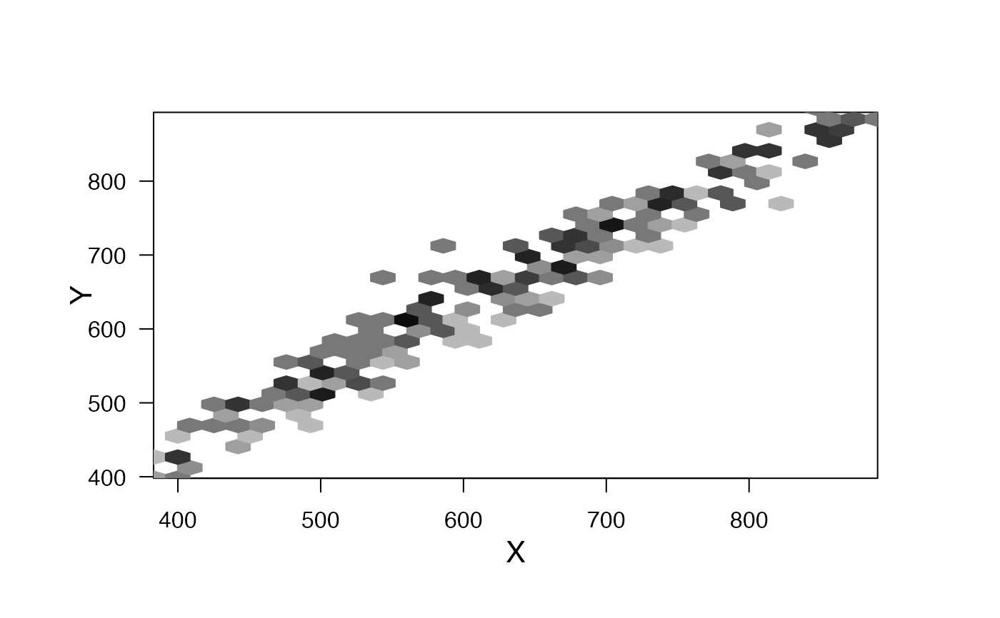
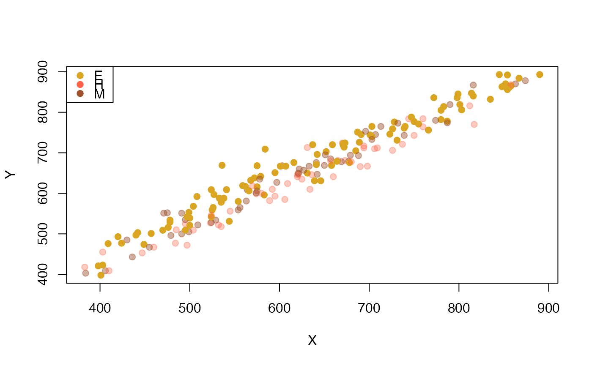
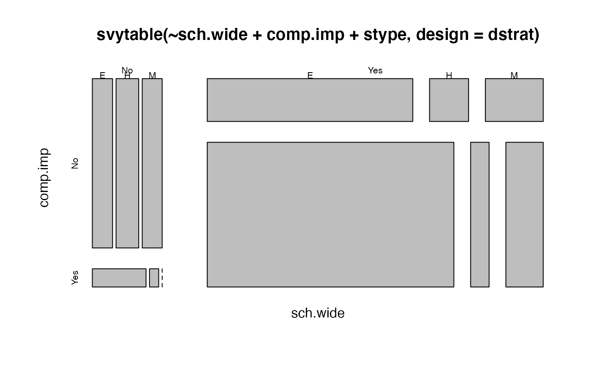
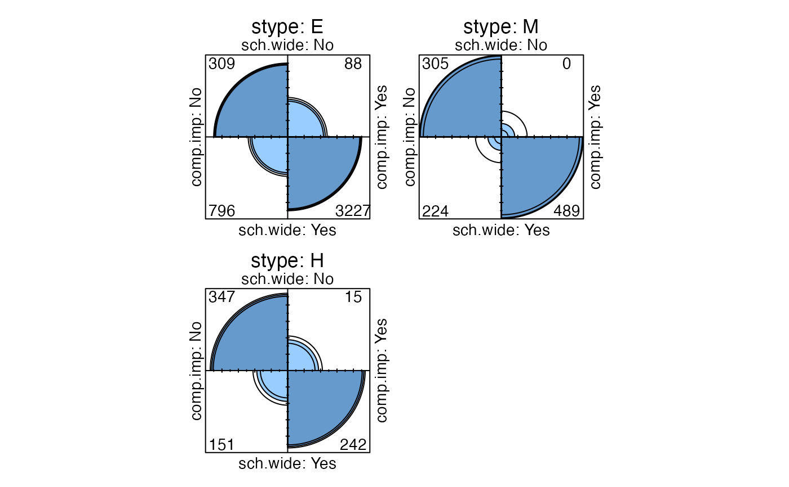
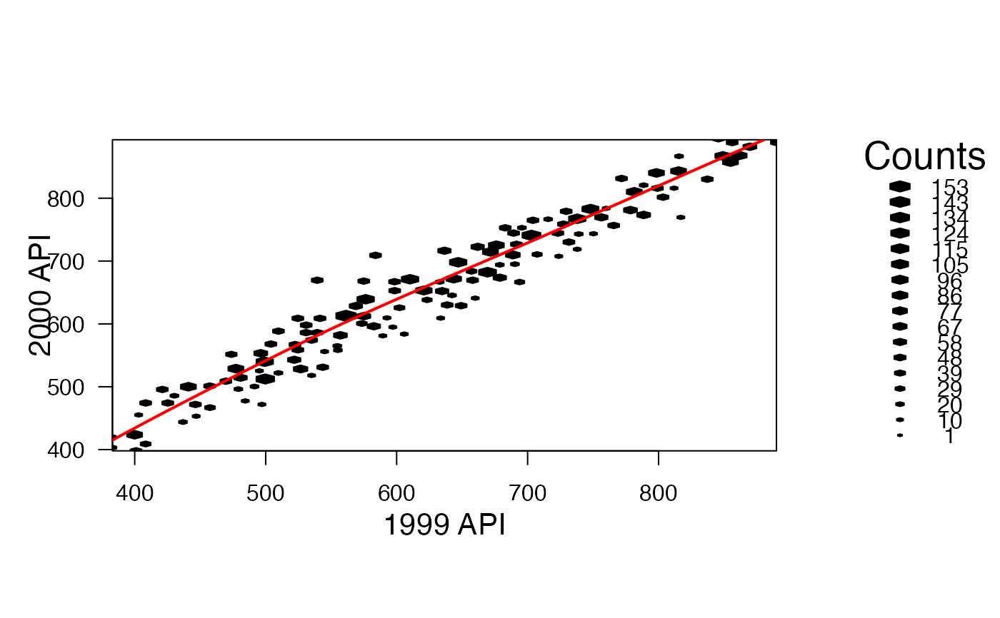

svyplot.RdBecause observations in survey samples may represent very different
numbers of units in the population ordinary plots can be misleading.
The svyplot function produces scatterplots adjusted in various ways
for sampling weights.
A model formula
A survey object (svydesign or svrepdesign)
See Details below
For style="subsample"
expression using variables in the design object
For style="hex" or "grayhex"
Scale for bubble plots
list with x and y components for amount of
jittering to use in subsample plots, or NULL for the default
amount
base color for transparent plots, or a function to compute the color (see below), or color for bubble plots
minimum and maximum opacity for transparent plots
Number of (x-axis) bins for hexagonal binning
Passed to plot methods
Bubble plots are scatterplots with circles whose area is proportional
to the sampling weight. The two "hex" styles produce hexagonal
binning scatterplots, and require the hexbin package from
Bioconductor. The "transparent" style plots points with opacity
proportional to sampling weight.
The subsample method uses the sampling weights to create a
sample from approximately the population distribution and passes this to plot
Bubble plots are suited to small surveys, hexagonal binning and transparency to large surveys where plotting all the points would result in too much overlap.
basecol can be a function taking one data frame argument, which
will be passed the data frame of variables from the survey object.
This could be memory-intensive for large data sets.
None
Korn EL, Graubard BI (1998) "Scatterplots with Survey Data" The American Statistician 52: 58-69
Lumley T, Scott A (2017) "Fitting Regression Models to Survey Data" Statistical Science 32: 265-278
data(api)
dstrat<-svydesign(id=~1,strata=~stype, weights=~pw, data=apistrat, fpc=~fpc)
svyplot(api00~api99, design=dstrat, style="bubble")
svyplot(api00~api99, design=dstrat, style="transparent",pch=19)
## these two require the hexbin package
svyplot(api00~api99, design=dstrat, style="hex", xlab="1999 API",ylab="2000 API")
svyplot(api00~api99, design=dstrat, style="grayhex",legend=0)

dclus2<-svydesign(id=~dnum+snum, weights=~pw,
data=apiclus2, fpc=~fpc1+fpc2)
svyplot(api00~api99, design=dclus2, style="subsample")
svyplot(api00~api99, design=dclus2, style="subsample",
amount=list(x=25,y=25))
svyplot(api00~api99, design=dstrat,
basecol=function(df){c("goldenrod","tomato","sienna")[as.numeric(df$stype)]},
style="transparent",pch=19,alpha=c(0,1))
legend("topleft",col=c("goldenrod","tomato","sienna"), pch=19, legend=c("E","H","M"))

## For discrete data, estimate a population table and plot the table.
plot(svytable(~sch.wide+comp.imp+stype,design=dstrat))

fourfoldplot(svytable(~sch.wide+comp.imp+stype,design=dstrat,round=TRUE))

## To draw on a hexbin plot you need grid graphics, eg,
library(grid)
h<-svyplot(api00~api99, design=dstrat, style="hex", xlab="1999 API",ylab="2000 API")
s<-svysmooth(api00~api99,design=dstrat)
grid.polyline(s$api99$x,s$api99$y,vp=h$plot.vp@hexVp.on,default.units="native",
gp=gpar(col="red",lwd=2))
